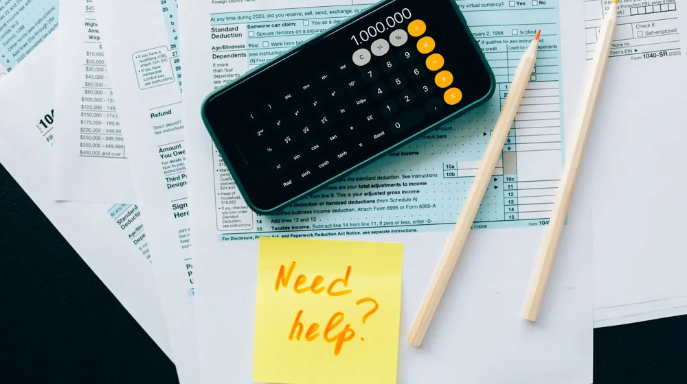

대출 막히기 전에 DSR 꼭 확인하세요: 초보자를 위한 핵심 가이드
사진: https://kaboompics.com/ / Pexels (무료 이미지, 출처 표기)
DSR이란 무엇이며 왜 중요할까요?

DSR(Debt Service Ratio, 총부채원리금상환비율)은 연간 소득 대비 모든 가계대출의 연간 원리금 상환액을 합산하여 백분율로 나타낸 지표입니다. 간단히 말해, 내가 1년에 버는 돈 중에서 모든 대출의 원금과 이자를 갚는 데 얼마나 쓰이는지를 보여주는 비율이라고 할 수 있습니다.
금융당국은 가계부채의 건전성을 높이고 금융 시스템의 안정을 강화하기 위해 DSR 규제를 도입했습니다. 대출 심사 시 차주(돈을 빌리는 사람)의 상환 능력을 종합적으로 평가하는 핵심 지표로 활용되므로, 대출을 계획 중이라면 자신의 DSR을 정확히 아는 것이 매우 중요합니다.
내 DSR, 어떻게 계산할까요?
DSR은 (연간 대출 원리금 상환액 합계 / 연간 소득) × 100%로 계산됩니다. 예를 들어 연 소득이 5천만 원이고, 모든 대출의 연간 원리금 상환액 합계가 2천만 원이라면 DSR은 40%가 됩니다. 이때 원리금 상환액에는 원금과 이자가 모두 포함됩니다.
DSR 산정 시 포함되는 대출과 제외되는 대출을 정확히 아는 것이 중요합니다. 주로 신용대출, 주택담보대출, 자동차 할부, 학자금 대출 등 대부분의 대출이 포함되지만, 일부 예외도 있습니다. 아래 표를 통해 DSR 산정 기준을 확인해보세요.
마이너스 통장의 경우, 실제 사용 금액과 관계없이 정해진 '한도'를 기준으로 일정 비율이 대출액으로 간주되어 DSR에 반영될 수 있습니다. 정확한 산정 방식은 금융기관마다 다를 수 있으므로 주거래 은행에 문의하는 것이 좋습니다.
DSR 규제 기준, 어디까지가 안전할까?
DSR 규제는 차주의 상환 능력을 고려하여 과도한 대출을 제한하기 위해 적용됩니다. 2026년 9월 기준으로, 은행권의 총 대출액이 1억 원을 초과하는 차주에게는 일반적으로 DSR 40%가 적용됩니다. 즉, 연 소득의 40%를 초과하는 원리금 상환액을 가진 차주에게는 추가 대출이 제한될 수 있다는 의미입니다.
비은행권(상호금융, 보험사, 저축은행 등)의 경우 은행권보다 다소 높은 50~60% 선에서 DSR 규제가 적용되는 것이 일반적입니다. 하지만 대출 상품의 종류, 금융기관의 내부 방침, 차주의 신용도 및 소득 구간에 따라 세부적인 기준은 달라질 수 있습니다. 금융위원회와 금융감독원은 가계부채 동향에 따라 규제 수준을 조정할 수 있으므로, 대출 신청 전 반드시 최신 정보를 확인하는 것이 중요합니다. 정확한 기준은 거래하려는 금융기관에 직접 문의하거나 해당 기관의 공식 홈페이지를 참고하시길 권장합니다.
DSR 관리, 어떻게 해야 대출을 잘 받을까요?
DSR을 효과적으로 관리하면 필요한 시기에 원활하게 대출을 받을 수 있습니다. 다음은 DSR을 낮추고 대출 가능성을 높이는 실용적인 전략들입니다.
- 불필요한 대출 정리: 사용하지 않는 마이너스 통장 한도를 줄이거나, 소액의 신용대출, 카드론 등을 먼저 상환하는 것이 DSR을 효과적으로 낮추는 방법입니다. 부채를 줄이면 그만큼 원리금 상환 부담이 감소합니다.
- 대출 만기 연장: 대출 만기를 최대한 길게 설정하여 연간 원리금 상환액을 줄이는 것도 DSR 개선에 도움이 됩니다. 특히 주택담보대출과 같은 장기 대출에 이 방법이 유용합니다. 하지만 총 이자액은 늘어날 수 있다는 점을 고려해야 합니다.
- 소득 증대 노력: 연봉 인상, 부업을 통한 추가 소득 확보 등 연간 소득을 늘리면 DSR 분모가 커지므로 비율이 자연스럽게 낮아집니다. 이는 장기적인 관점에서 DSR 관리에 가장 확실한 방법입니다.
- 고금리 대출 우선 상환: 이자 부담이 큰 고금리 대출부터 우선적으로 상환하여 전체적인 상환 부담을 줄이는 것이 현명합니다. 이자율이 높을수록 DSR에 미치는 영향이 커지기 때문입니다.
DSR 관련 궁금증, 이것만은 꼭 알아두세요!
DSR은 복잡해 보이지만 몇 가지 핵심 사항을 이해하면 대출 계획을 세우는 데 큰 도움이 됩니다.
- 변동금리 대출의 영향: 금리가 오르면 변동금리 대출의 원리금 상환액이 늘어나 DSR이 상승할 수 있습니다. 금리 변동 리스크를 충분히 고려하여 대출을 선택해야 합니다.
- 다중 채무자의 불리함: 여러 금융기관에서 다양한 대출을 받은 다중 채무자는 DSR 산정 시 모든 부채가 합산되므로 대출 한도가 더욱 엄격하게 제한될 수 있습니다.
- 정책 서민 대출의 예외: 햇살론, 새희망홀씨와 같은 일부 정책 서민 대출은 서민·취약계층의 금융 접근성을 높이기 위해 DSR 산정에서 제외되거나 유리하게 반영될 수 있습니다.
- 마이너스 통장의 실제 사용액: 금융기관에 따라 마이너스 통장은 실제 사용하지 않아도 '약정한 한도'를 기준으로 일정액이 대출로 간주되어 DSR에 반영될 수 있습니다. 정확한 반영 방식은 은행별로 다를 수 있으니 확인이 필요합니다.
DSR은 단순히 숫자를 넘어 여러분의 금융 건전성을 나타내는 중요한 지표입니다. 대출을 고려하고 있다면 자신의 DSR을 정확히 이해하고 현명하게 관리하여 안정적인 금융 생활을 계획하시길 바랍니다. 모든 대출 조건과 규제는 2026년 9월 기준으로 작성되었으며, 정확한 사항은 공식 홈페이지나 해당 금융 기관에서 다시 확인하시길 권장합니다.
🔗 이 글도 함께 보면 좋아요: 코스피 하락, 불안한 투자자라면 꼭 알아야 할 3가지 핵심 원인